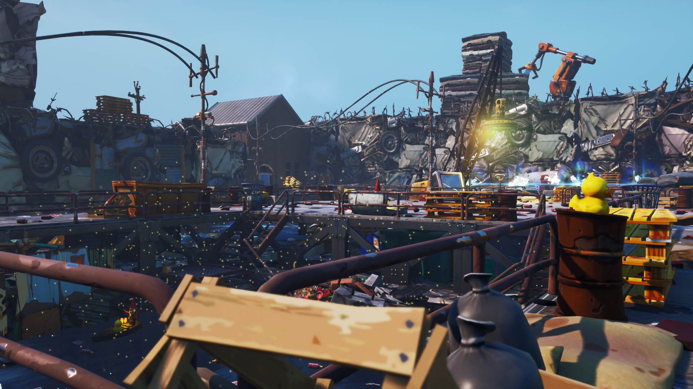

Save the Island

The island needs your help! Just like in Fortnite, we need to protect our surroundings and work together to keep the environment safe
This website uses a Fortnite-inspired theme to teach students about kaitiakitanga and why caring for nature is important. Kaitiakitanga means taking responsibility for protecting the environment for people, animals and future generations
Choose Your Environmental Mission
Small actions can make a difference. Explore the missions below and learn how you can help in your everyday life
Mission 1 - Protect Wildlife
Animals need safe places to live. Respect wildlife, protect habitats and avoid disturbing animals in their natural homes
Mission 2 - Reduce Rubbish
Rubbish can harm animals and pollute natural areas. Reuse items when possible and always put rubbish in the correct bin
Mission 3 - Protect Water
Rivers, lakes and beaches are important for people and wildlife. Help keep waterways clean by preventing rubbish and pollution
Visit the Missions page for more ideas and choose one action you can try this week